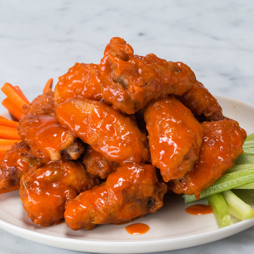

Authentic Buffalo Wings

This recipe comes straight from Buffalo New York, home of these juicy, tender, and spicy chicken wings.
Your mouth will thank-you after every bite.
Ingredients
Chicken Wings
- 2 Kg (4 pounds) chicken wings cut into drumettes and flats
- 1 tablespoon aluminium free baking powder (NOT baking soda)
- 1/2 teaspoon salt
- 2 teaspoons garlic powder
- Pinch of cracked pepper
Buffalo Sauce:
- 1/4 cup unsalted butter, melted
- 1/2 cup Frank's Original Red Hot Sauce
- 1-2 tablespoons honey, white sugar or brown sugar (adjust to suit your tastes)
Blue Cheese Dip:
- 1/2 cup crumbled blue cheese softened
- 1/3 cup sour cream
- 1/4 cup mayonnaise
- 2 cloves garlic minced
- 1 tablespoon lemon juice
- Pinch of salt
- Pinch of cracked black pepper
Steps
- Adjust oven rack to upper-middle position and preheat oven to 450°F (230°C). Line a rimmed baking sheet with aluminium foil
and set a heat-proof wire rack inside.
- Pat dry chicken wings liberally with paper towels, squeezing out as much moisture as you can. Transfer them to a large bowl.
- In a small bowl, combine the baking powder, garlic powder, salt and pepper together, whisking well to combine, and sprinkle
the mixture over the wings. Toss wings through the baking powder mixture until evenly coated.
- Arrange on rack, leaving about 1-inch of space between each wing.
- Bake for 30 minutes; flip and continue to cook until crisp and golden brown, (about 20-30 minutes longer), until golden browned
and crispy.
- While wings are cooking, whisk together hot sauce, butter and sugar. Toss wings through the sauce to evenly coat.
- Serve wings immediately with blue cheese dressing or ranch dressing, and celery sticks.
Home